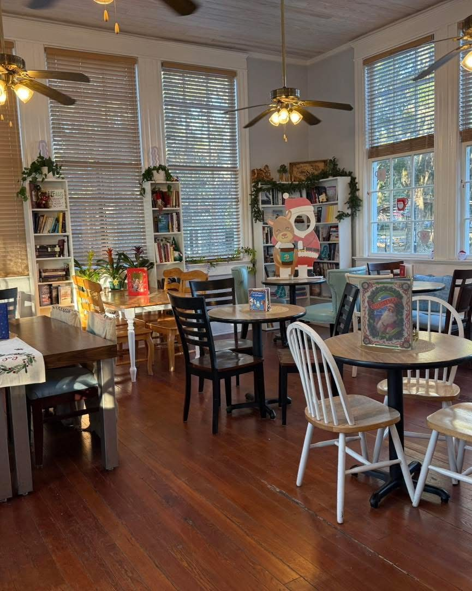
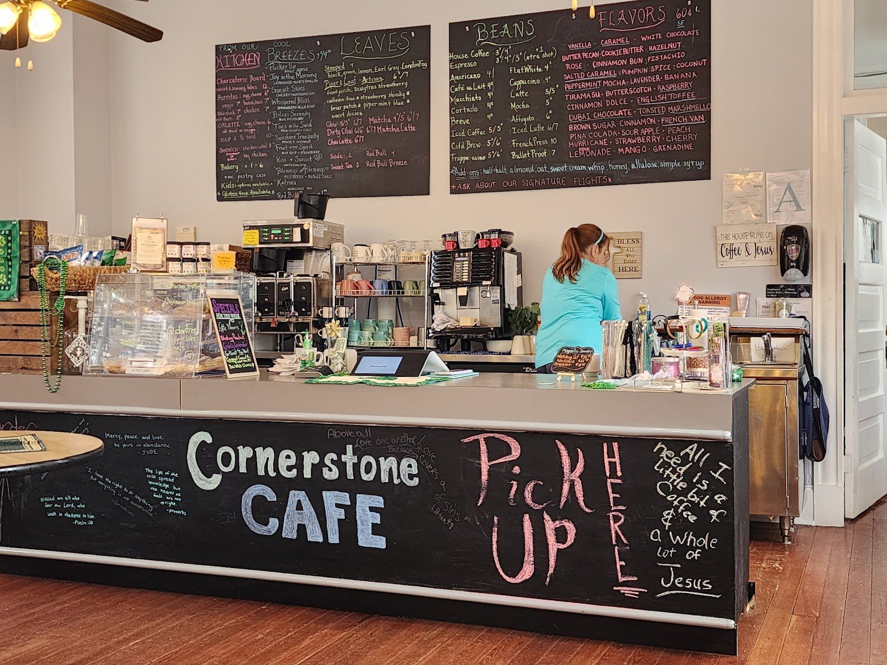
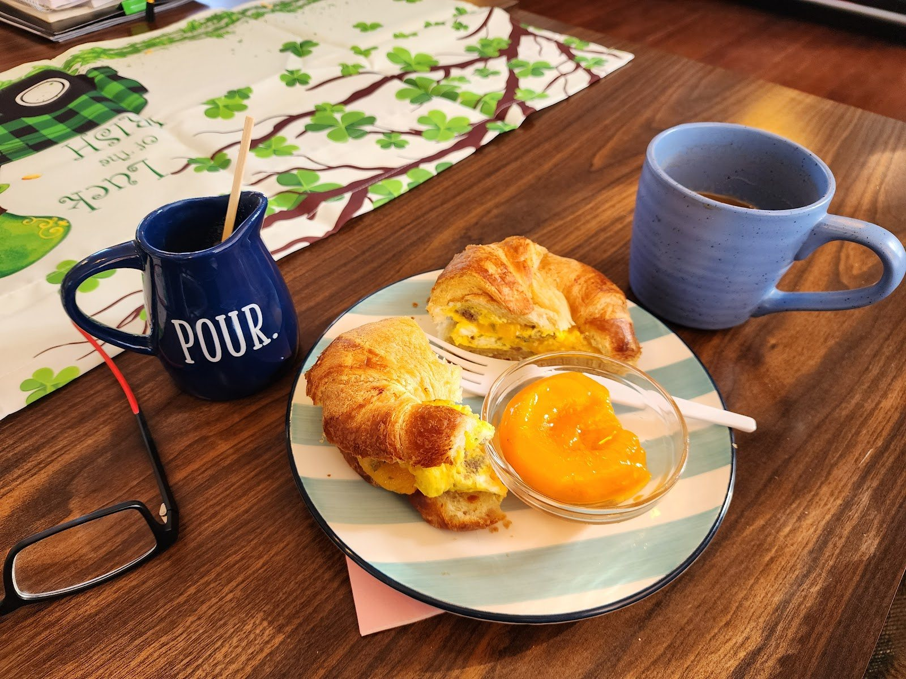
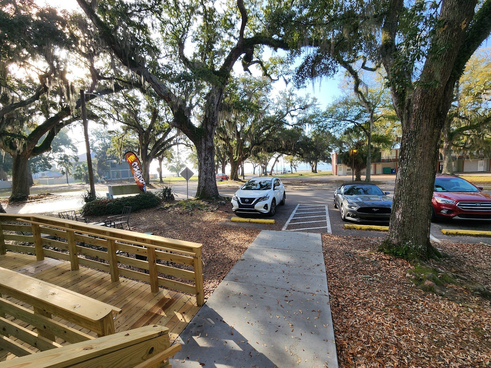

Coffee under the oaks in Biloxi.
Breakfast and unusual brews in a historic building near the Gulf.




“The food was really good and the coffee didn’t disappoint. Definitely a hidden gem!”
From a Google review, February 2026Hours
- Mon to Sat
- 6:30 AM to 3 PM
- Sunday
- Closed
- Address
- 123 Example St, Biloxi, MS
- Phone
- 123-456-789